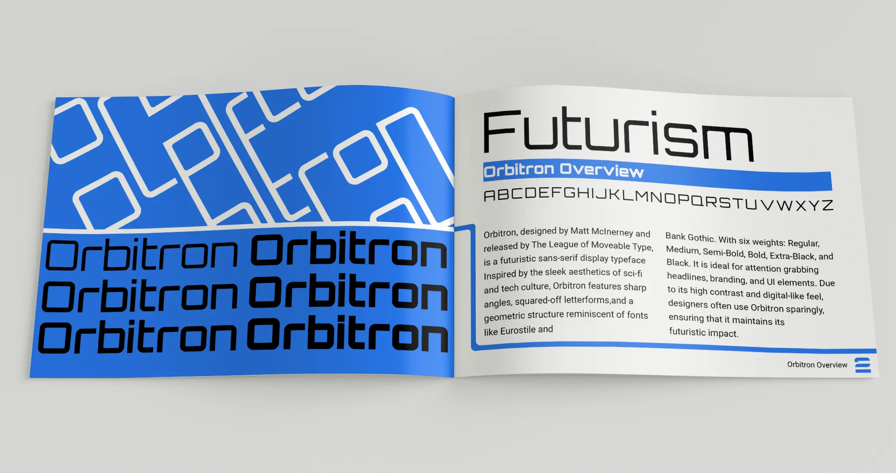
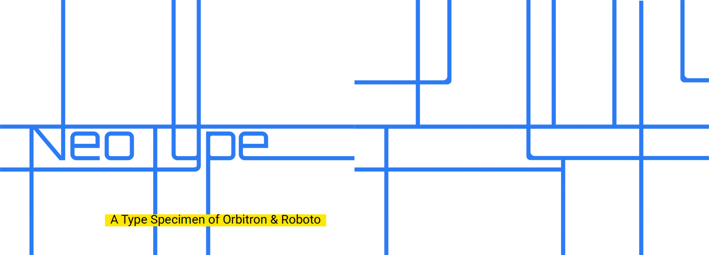
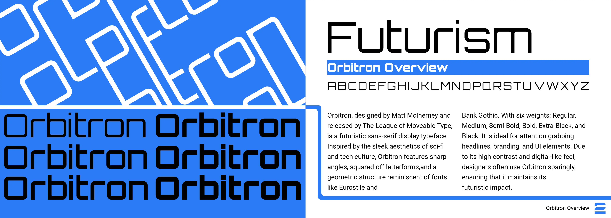
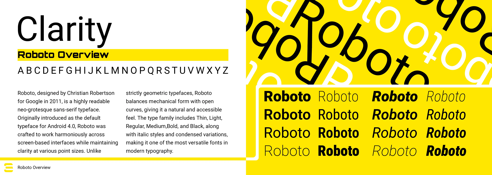
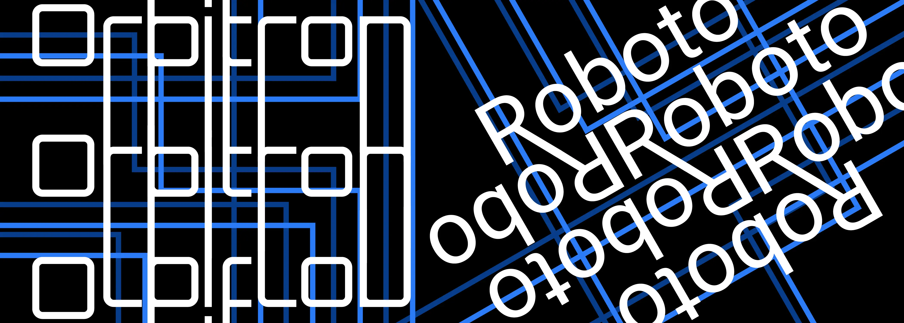
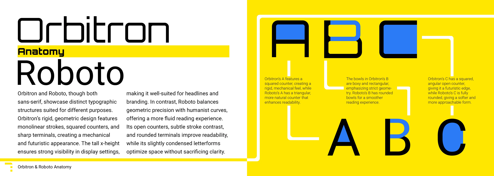
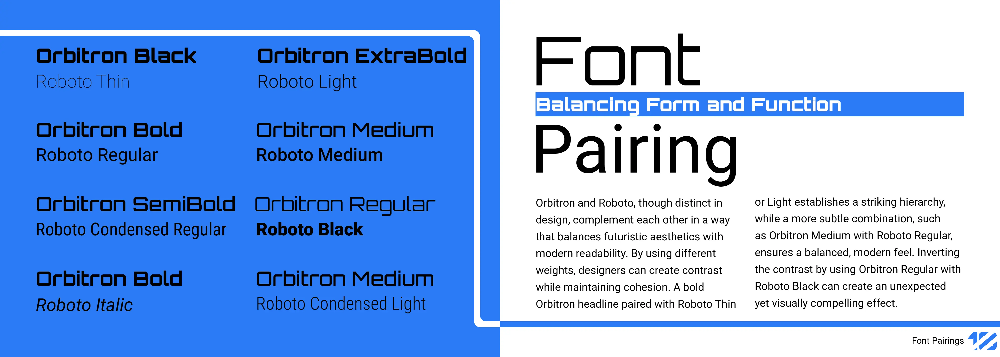

 Print Design
Print Design
Project Brief
For this project, the brief was open-ended: choose two typefaces and build a specimen book that shows their design potential. The real challenge with an open brief like that is picking a pairing worth arguing for, most type pairings default to “one display face, one safe body text,” which doesn’t say much on its own.
I picked Orbitron and Roboto specifically because they read as opposites: Orbitron is rigid, geometric, and built for headlines and branding, while Roboto is humanist and built to disappear into body copy. The book’s job became proving those opposites could coexist, so instead of a neutral grid, I built the layout system around circuit-board geometry, which gave Orbitron’s mechanical character a structural role rather than just a decorative one, while Roboto carried all the explanatory text without competing for attention.
Final Design





